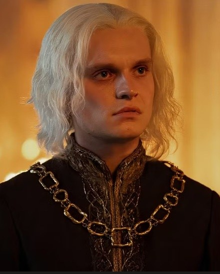
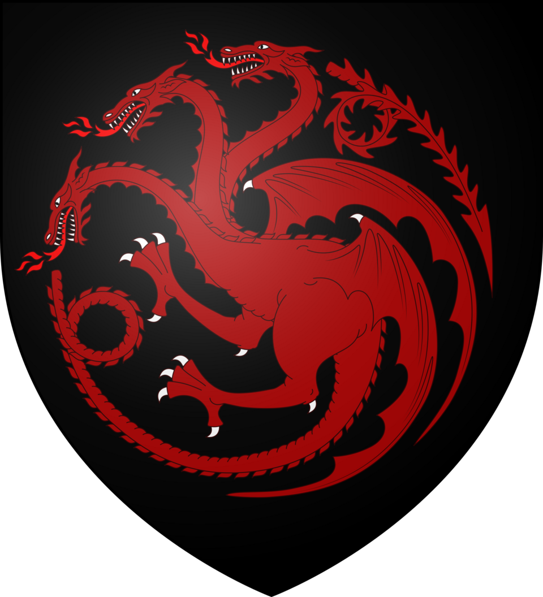

Núcleo Hightower
Aegon Targaryen
É coroado Aegon II no Fosso dos Dragões, com a coroa de Aegon, o Conquistador.
Conteúdo até a temporada 1, episódio 10.
Ver Mapa de Conexões →HISTÓRICO DO PERSONAGEM
Temporada 1
Acompanhe os acontecimentos registrados até o episódio escolhido.
Episódio 03 — Second of His Name
Filho de Viserys e Alicent. Seu nascimento dá aos que rejeitam Rhaenyra uma alternativa masculina de sucessão.
Episódio 06 — The Princess and the Queen
Adolescente, participa das provocações a Aemond. Alicent insiste que ele representa um desafio à sucessão de Rhaenyra.
Episódio 09 — The Green Council
É coroado Aegon II no Fosso dos Dragões, com a coroa de Aegon, o Conquistador.
Personagens relacionados
- Viserys I TargaryenPai e filho
- Alicent HightowerMãe e filho
- Helaena TargaryenCasados
- SunfyreCavaleiro / dragão
- Arryk CargyllGuarda Real / rei
- OrwyleConselho da coroação
- DyanaDenúncia de agressão
- Jaehaerys Targaryen (filho de Aegon)Filho / pai
- Jaehaera TargaryenFilha / pai
- Aemond TargaryenIrmãos